Tests for checking Batch Effects
| Batch 1 | Batch 2 | Batch 3 | |
|---|---|---|---|
| Condition 1 | 10 | 10 | 10 |
| Condition 2 | 10 | 10 | 10 |
| Standardized Pearson Correlation Coefficient | Cramer’s V | |
|---|---|---|
| Confounding Coefficients (0=no confounding, 1=complete confounding) | 0 | 0 |
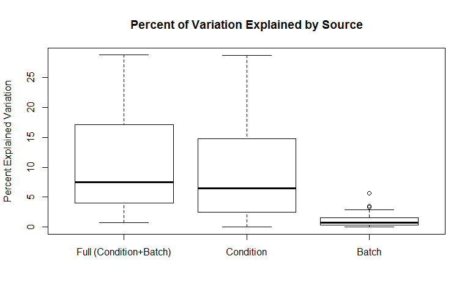
| Full (Condition+Batch) | Condition | Batch | |
|---|---|---|---|
| Min. | 0.751 | 0 | 0.012 |
| 1st Qu. | 4.157 | 2.593 | 0.3903 |
| Median | 7.462 | 6.433 | 0.801 |
| Mean | 10.08 | 8.941 | 1.137 |
| 3rd Qu. | 16.49 | 14.58 | 1.506 |
| Max. | 28.71 | 28.68 | 5.636 |
| Min. | 1st Qu. | Median | Mean | 3rd Qu. | Max. | Ps<0.05 | |
|---|---|---|---|---|---|---|---|
| Batch P-values | 0.1751 | 0.5964 | 0.7828 | 0.739 | 0.8886 | 0.9966 | 0 |
| Condition P-values | 1.474e-05 | 0.002792 | 0.05374 | 0.1668 | 0.2239 | 0.9999 | 0.48 |
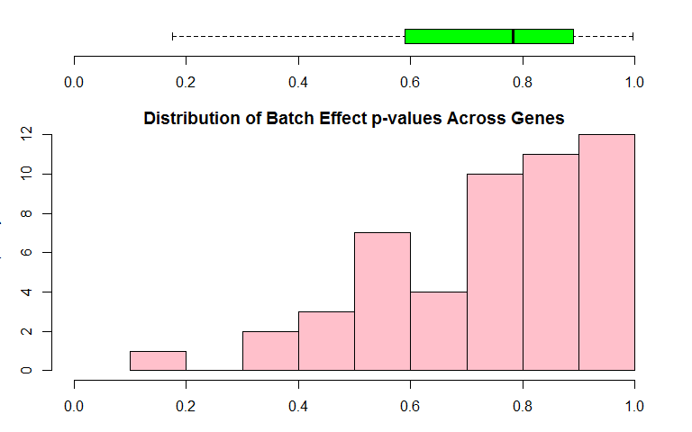
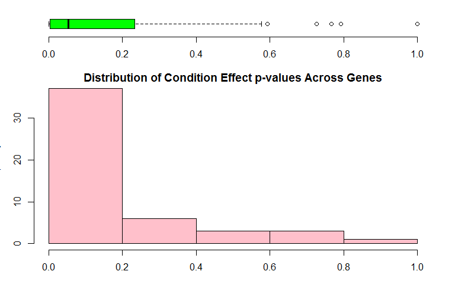
Boxplots for all values for each of the samples and are colored by batch membership.
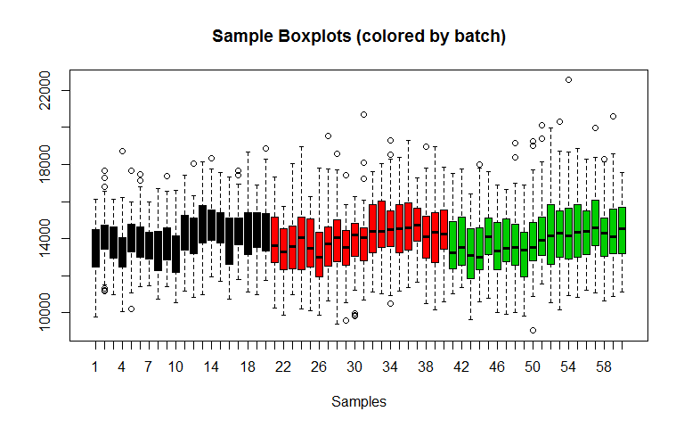
| Condition: 2 (logFC) | AveExpr | t | P.Value | adj.P.Val | B | |
|---|---|---|---|---|---|---|
| 37 | 1806 | 14914 | 4.545 | 7.592e-06 | 0.0003092 | -4.594 |
| 47 | 1759 | 15252 | 4.435 | 1.237e-05 | 0.0003092 | -4.594 |
| 45 | 1576 | 14923 | 4.051 | 6.287e-05 | 0.001006 | -4.594 |
| 5 | 1479 | 13010 | 3.945 | 9.658e-05 | 0.001006 | -4.594 |
| 30 | 1505 | 14338 | 3.931 | 0.0001022 | 0.001006 | -4.594 |
| 42 | 1525 | 14873 | 3.889 | 0.0001207 | 0.001006 | -4.594 |
| 8 | 1409 | 13219 | 3.694 | 0.0002566 | 0.001773 | -4.594 |
| 22 | 1428 | 14077 | 3.667 | 0.0002837 | 0.001773 | -4.594 |
| 1 | 1263 | 12957 | 3.3 | 0.001068 | 0.005423 | -4.595 |
| 9 | 1257 | 13178 | 3.295 | 0.001085 | 0.005423 | -4.595 |
This plot helps identify outlying samples. 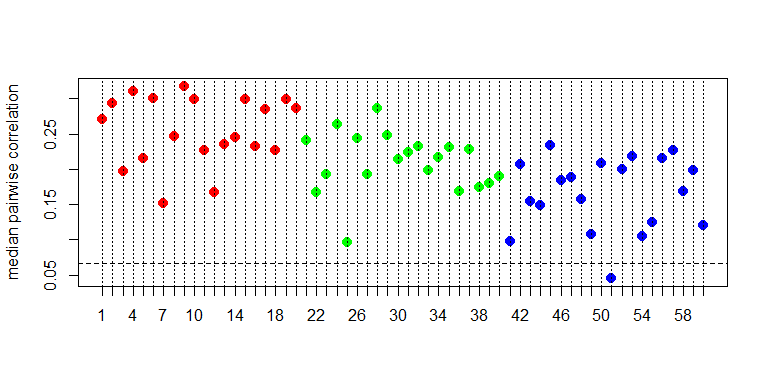
This is a heatmap of the given data matrix showing the batch effects and variations with different conditions. 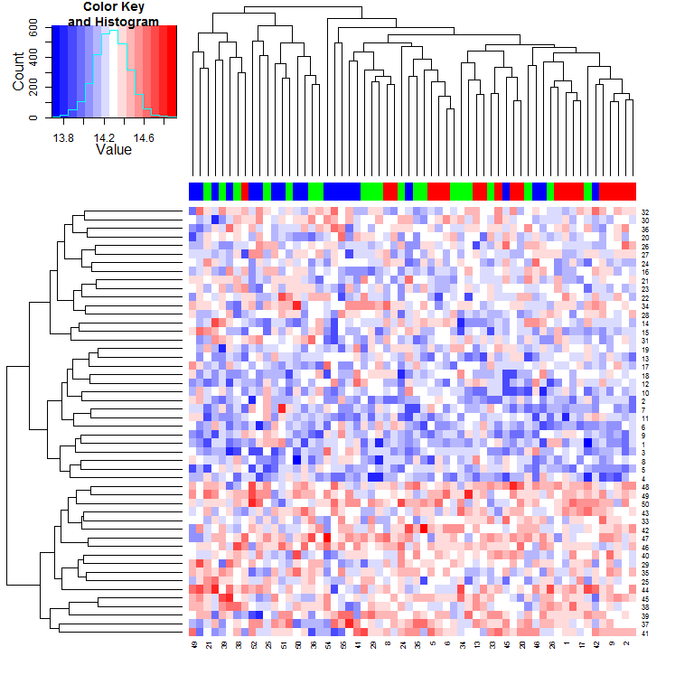
This is a heatmap of the correlation between samples. 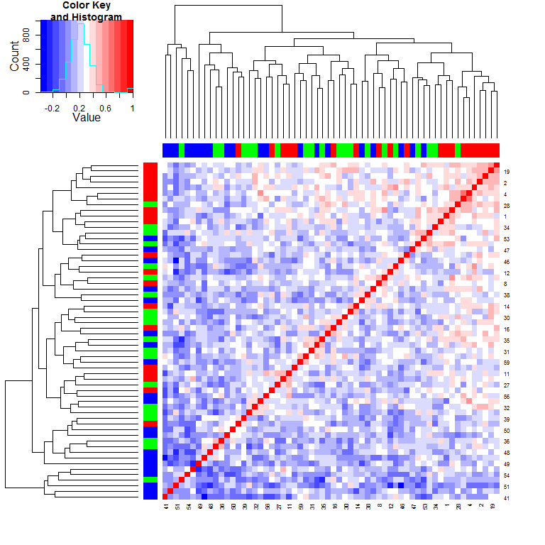
This is a Circular Dendrogram of the given data matrix colored by batch to show the batch effects. 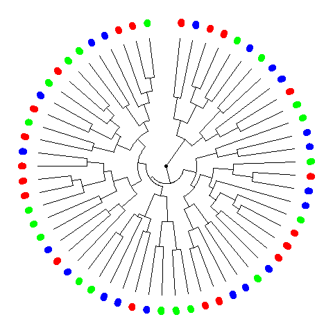
This is a plot of the top two principal components colored by batch to show the batch effects. 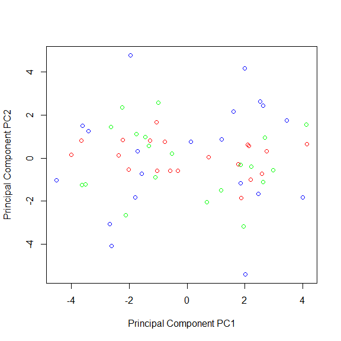
| Proportion of Variance (%) | Cumulative Proportion of Variance (%) | Percent Variation Explained by Either Condition or Batch | Percent Variation Explained by Condition | Condition Significance (p-value) | Percent Variation Explained by Batch | Batch Significance (p-value) | |
|---|---|---|---|---|---|---|---|
| PC1 | 11.56 | 11.56 | 74.4 | 74.4 | 0 | 0 | 0.9688 |
| PC2 | 6.644 | 18.21 | 0.6 | 0.2 | 0.7412 | 0.4 | 0.8894 |
| PC3 | 5.742 | 23.95 | 0 | 0 | 0.8786 | 0 | 0.9986 |
| PC4 | 5.488 | 29.44 | 1.3 | 0.2 | 0.7605 | 1.1 | 0.728 |
| PC5 | 4.856 | 34.3 | 0.2 | 0.1 | 0.8415 | 0.1 | 0.9661 |
| PC6 | 4.464 | 38.76 | 0.7 | 0.5 | 0.5919 | 0.2 | 0.9552 |
| PC7 | 4.144 | 42.9 | 0.8 | 0.4 | 0.6303 | 0.4 | 0.9041 |
| PC8 | 3.912 | 46.81 | 0.6 | 0 | 0.9712 | 0.6 | 0.8516 |
| PC9 | 3.747 | 50.56 | 1.8 | 0 | 0.9437 | 1.8 | 0.5949 |
| PC10 | 3.488 | 54.05 | 0.1 | 0.1 | 0.859 | 0 | 0.9994 |
| PC11 | 3.322 | 57.37 | 1.1 | 0.1 | 0.84 | 1 | 0.7458 |
| PC12 | 3.252 | 60.62 | 0.5 | 0.1 | 0.8415 | 0.4 | 0.8891 |
| PC13 | 3.062 | 63.68 | 0.1 | 0.1 | 0.8223 | 0 | 0.9935 |
| PC14 | 2.723 | 66.41 | 1.9 | 0.2 | 0.7403 | 1.7 | 0.6101 |
| PC15 | 2.706 | 69.11 | 6.5 | 1.8 | 0.2984 | 4.6 | 0.2594 |
| PC16 | 2.475 | 71.59 | 3.8 | 3.5 | 0.1584 | 0.3 | 0.9199 |
| PC17 | 2.25 | 73.84 | 1.4 | 0.9 | 0.4661 | 0.4 | 0.8879 |
| PC18 | 2.159 | 76 | 2.3 | 0.6 | 0.5463 | 1.7 | 0.6201 |
| PC19 | 1.983 | 77.98 | 0.1 | 0 | 0.8864 | 0.1 | 0.983 |
| PC20 | 1.94 | 79.92 | 4 | 0.3 | 0.6817 | 3.7 | 0.3487 |
| PC21 | 1.783 | 81.7 | 4.3 | 0.4 | 0.6472 | 3.9 | 0.3276 |
| PC22 | 1.714 | 83.42 | 0.9 | 0 | 0.9737 | 0.9 | 0.7718 |
| PC23 | 1.53 | 84.95 | 2.1 | 0.1 | 0.7845 | 1.9 | 0.5771 |
| PC24 | 1.405 | 86.35 | 10.9 | 1.5 | 0.3428 | 9.5 | 0.05878 |
| PC25 | 1.307 | 87.66 | 2 | 1.2 | 0.4031 | 0.8 | 0.7949 |
| PC26 | 1.23 | 88.89 | 2.4 | 0.3 | 0.6714 | 2 | 0.5603 |
| PC27 | 1.102 | 89.99 | 2.2 | 0.1 | 0.8415 | 2.1 | 0.549 |
| PC28 | 1.067 | 91.06 | 3.3 | 0 | 0.898 | 3.3 | 0.3944 |
| PC29 | 1.028 | 92.09 | 4.5 | 0.1 | 0.8308 | 4.4 | 0.2813 |
| PC30 | 0.9698 | 93.06 | 0.3 | 0.2 | 0.7164 | 0.1 | 0.9738 |
| PC31 | 0.8128 | 93.87 | 2.4 | 0.1 | 0.7923 | 2.3 | 0.5187 |
| PC32 | 0.7507 | 94.62 | 3 | 1.1 | 0.4325 | 1.9 | 0.5848 |
| PC33 | 0.7104 | 95.33 | 0.9 | 0 | 0.8846 | 0.9 | 0.775 |
| PC34 | 0.6427 | 95.97 | 7.5 | 0.3 | 0.6514 | 7.1 | 0.1251 |
| PC35 | 0.6037 | 96.58 | 0.4 | 0.1 | 0.8592 | 0.3 | 0.9209 |
| PC36 | 0.5282 | 97.1 | 6.8 | 0 | 0.915 | 6.8 | 0.1395 |
| PC37 | 0.4622 | 97.57 | 4.3 | 0.2 | 0.7533 | 4.1 | 0.3102 |
| PC38 | 0.386 | 97.95 | 0.5 | 0.1 | 0.8545 | 0.5 | 0.8807 |
| PC39 | 0.3805 | 98.33 | 1.3 | 0 | 0.8925 | 1.3 | 0.7009 |
| PC40 | 0.3269 | 98.66 | 3.5 | 0.3 | 0.7021 | 3.3 | 0.393 |
| PC41 | 0.3123 | 98.97 | 2.2 | 0.4 | 0.6456 | 1.8 | 0.604 |
| PC42 | 0.2694 | 99.24 | 0.4 | 0 | 0.9867 | 0.4 | 0.8978 |
| PC43 | 0.1949 | 99.44 | 1.1 | 0.5 | 0.5934 | 0.6 | 0.8552 |
| PC44 | 0.133 | 99.57 | 0.6 | 0 | 0.9899 | 0.6 | 0.8366 |
| PC45 | 0.1161 | 99.69 | 2.8 | 1 | 0.4499 | 1.8 | 0.6046 |
| PC46 | 0.09976 | 99.79 | 3.4 | 0.5 | 0.6007 | 2.9 | 0.4364 |
| PC47 | 0.08707 | 99.87 | 2.4 | 1.7 | 0.3219 | 0.6 | 0.8382 |
| PC48 | 0.05431 | 99.93 | 19.3 | 2.6 | 0.1845 | 16.7 | 0.00521 |
| PC49 | 0.04961 | 99.98 | 5.5 | 0.2 | 0.7328 | 5.3 | 0.2192 |
| PC50 | 0.02355 | 100 | 21.6 | 0.1 | 0.8132 | 21.5 | 0.00114 |
This is a heatmap plot showing the variation of gene expression mean, variance, skewness and kurtosis between samples grouped by batch to see the batch effects variation 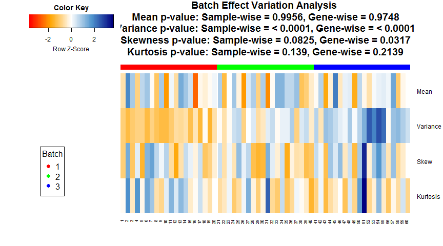
## Note: Sample-wise p-value is calculated for the variation across samples on the measure across genes. Gene-wise p-value is calculated for the variation of each gene between batches on the measure across each batch. If the data is quantum normalized, then the Sample-wise measure across genes is same for all samples and Gene-wise p-value is a good measure.This is a plot showing whether parametric or non-parameteric prior is appropriate for this data. It also shows the Kolmogorov-Smirnov test comparing the parametric and non-parameteric prior distribution.
## Found 3 batches
## Adjusting for 1 covariate(s) or covariate level(s)
## Standardizing Data across genes
## Fitting L/S model and finding priors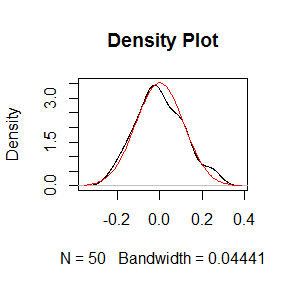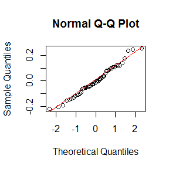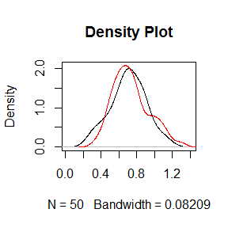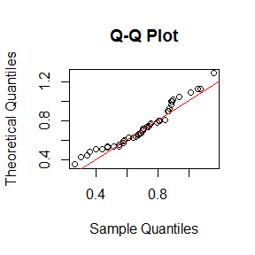
## Batch mean distribution across genes: Normal vs Empirical distribution
## Two-sided Kolmogorov-Smirnov test
## Selected Batch: 1
## Statistic D = 0.06544
## p-value = 0.9735
##
##
## Batch Variance distribution across genes: Inverse Gamma vs Empirical distribution
## Two-sided Kolmogorov-Smirnov test
## Selected Batch: 1
## Statistic D = 0.16
## p-value = 0.5487Note: The non-parametric version of ComBat takes much longer time to run and we recommend it only when the shape of the non-parametric curve widely differs such as a bimodal or highly skewed distribution. Otherwise, the difference in batch adjustment is very negligible and parametric version is recommended even if p-value of KS test above is significant.## Number of Surrogate Variables found in the given data: 0